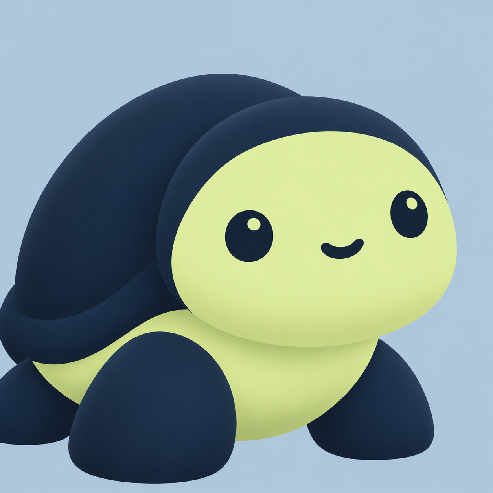
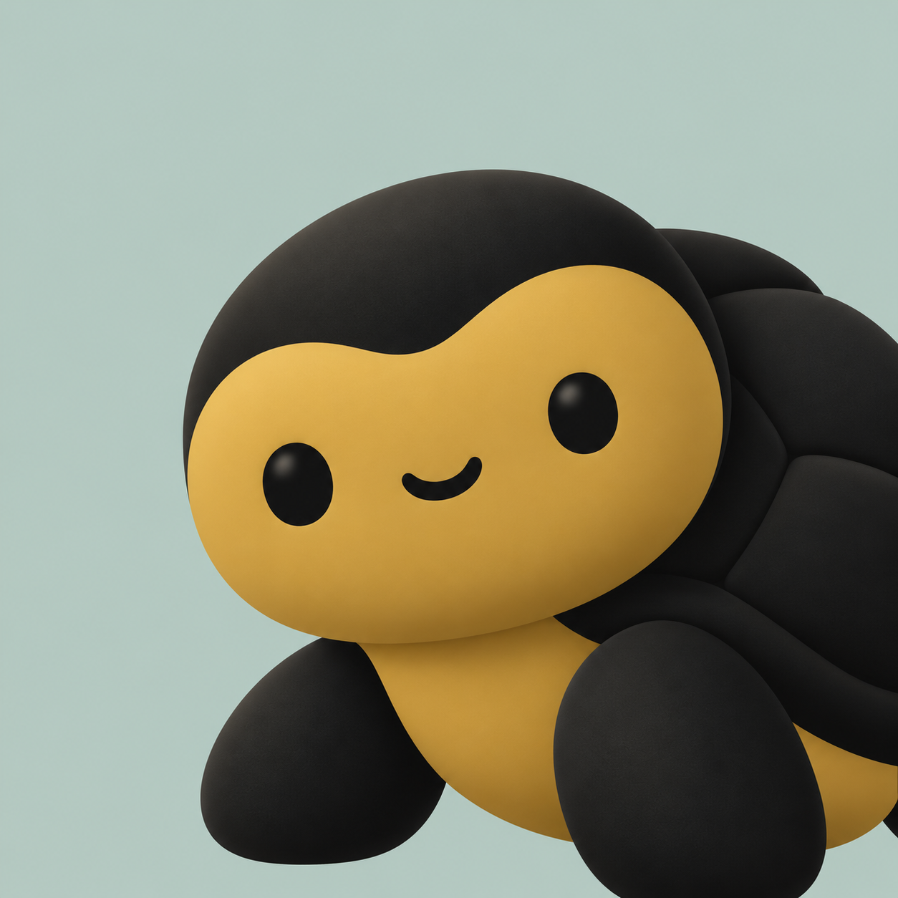
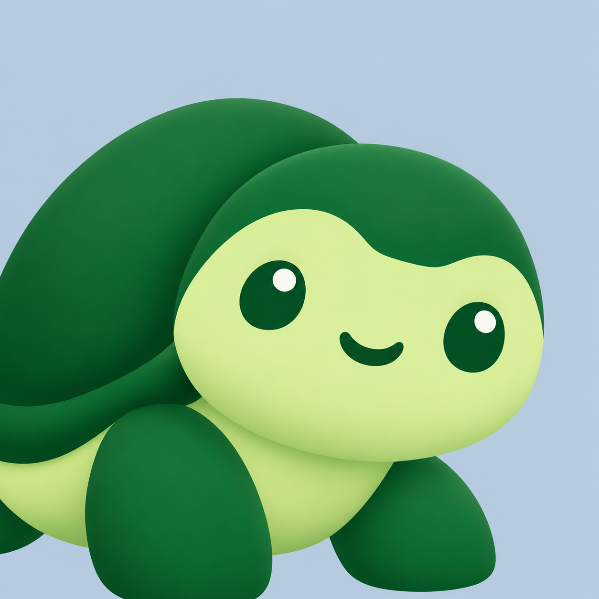
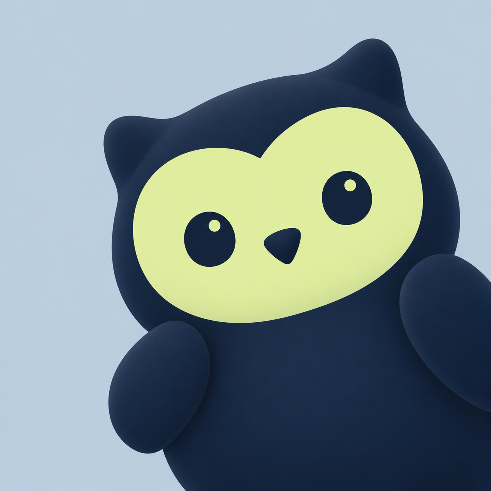
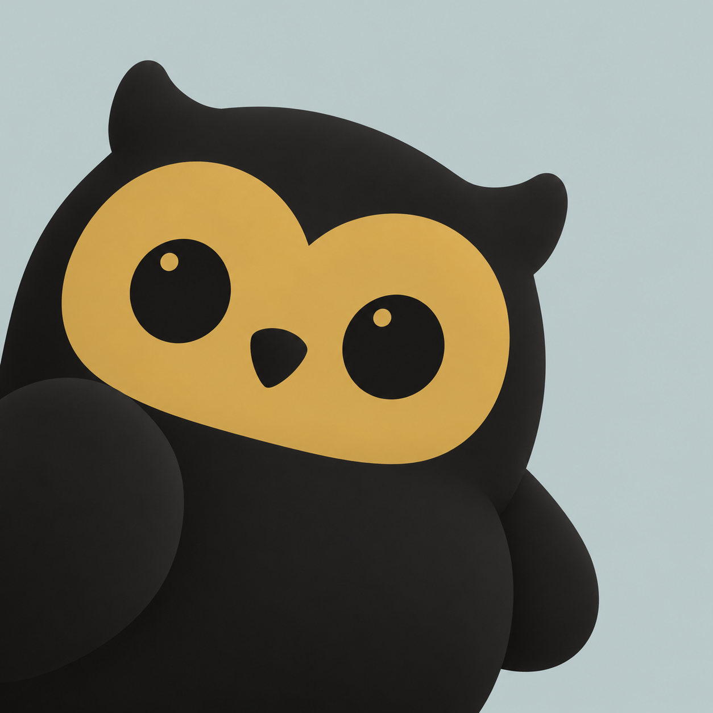
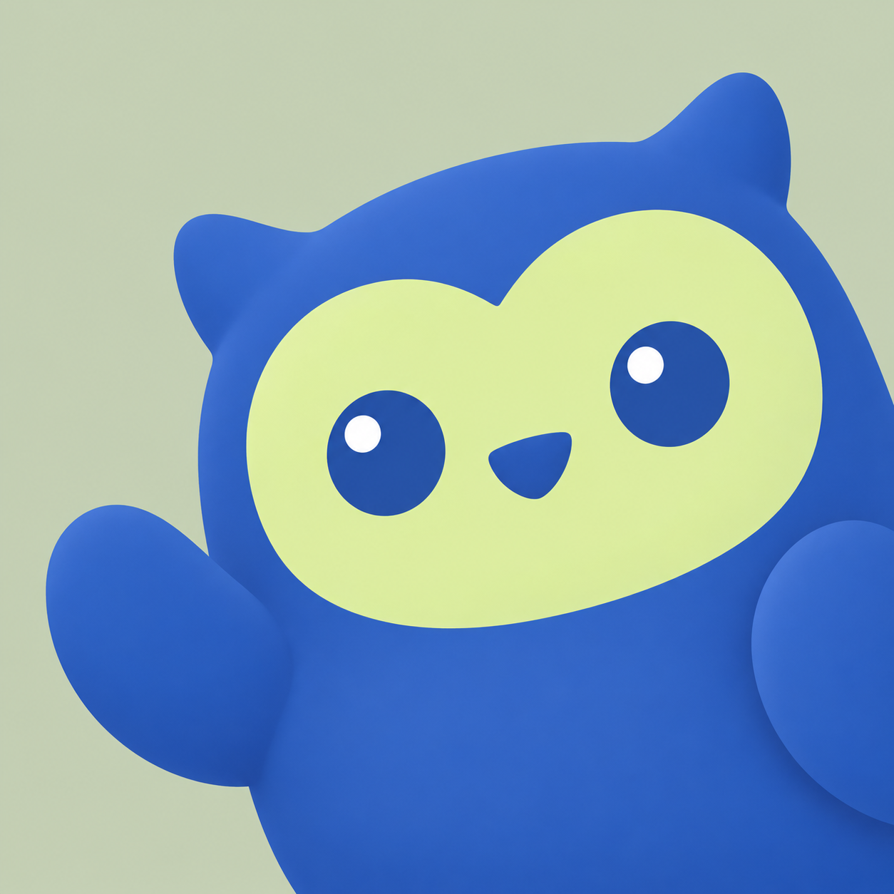
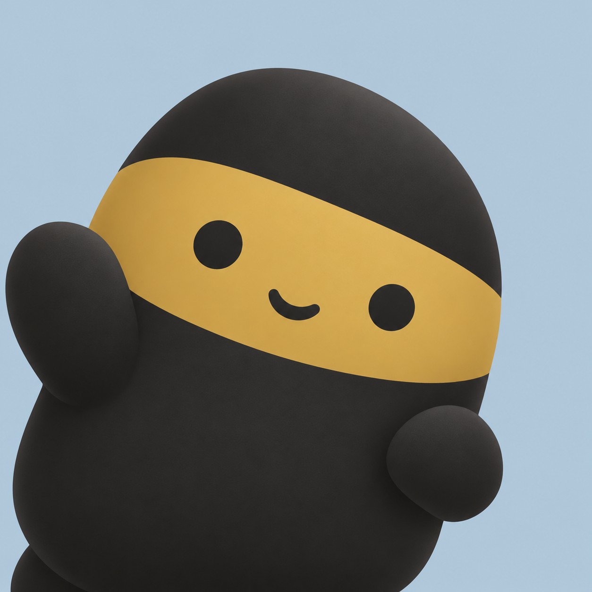
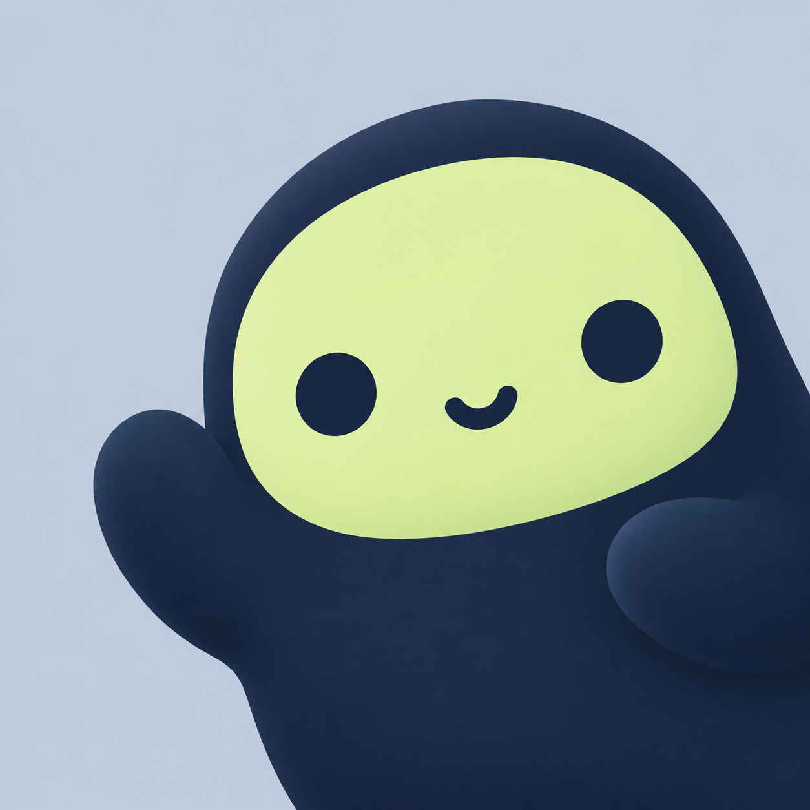
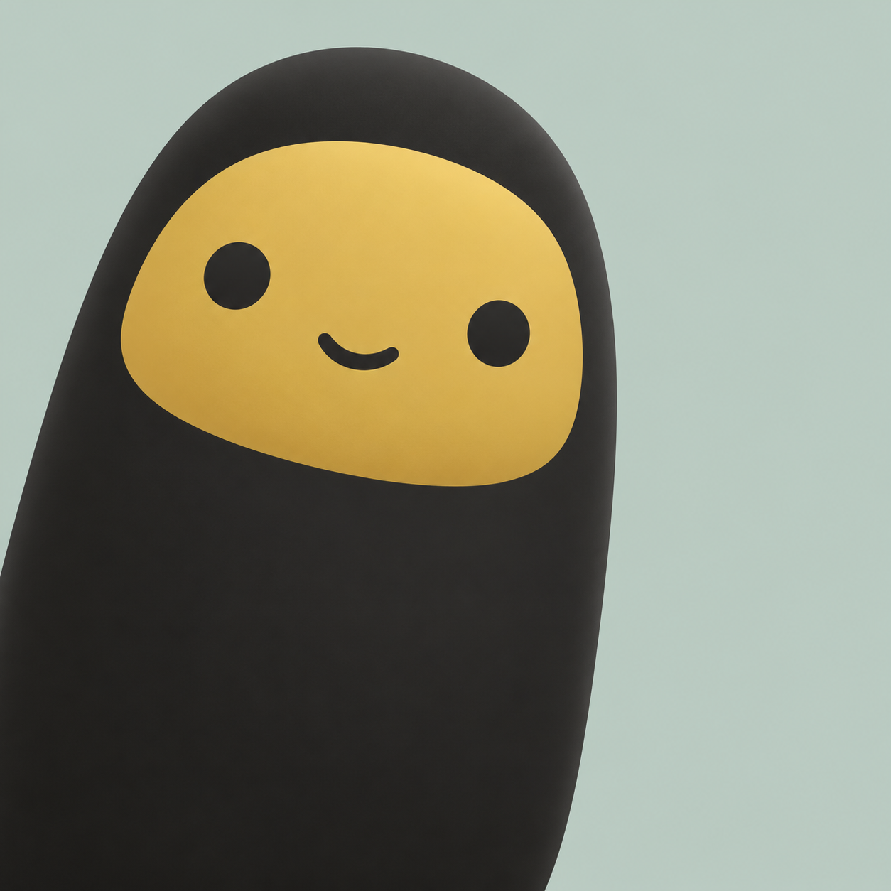

Turtles represent protection; owls represent investigation; living touchstones represent authenticity and the Kasauti theme. Click any image for the original. Full prompts and color mappings: prompts.json.

01 · Guardian turtle
lower-left · #13233a / #dff0a8 · background #b9cddd

02 · Guardian turtle
lower-right · #0e0e0d / #c9a24a · background #b8cbc4

03 · Guardian turtle
lower-left · #0a6b2d / #dff0a8 · background #c2d1e1

04 · Detective owl
lower-right · #13233a / #dff0a8 · background #c5d4e1

05 · Detective owl
lower-left · #0e0e0d / #c9a24a · background #c3d0cf

06 · Detective owl
lower-right · #2f5fb3 / #dff0a8 · background #c9d3bb

07 · Living touchstone
lower-left · #1f1f1d / #c9a24a · background #b9cddd

08 · Living touchstone
lower-right · #13233a / #dff0a8 · background #c7d1de

09 · Living touchstone
lower-left · #1f1f1d / #d4ae55 · background #c0cec5
10 · Living touchstone
lower-right · #13233a / #c9a24a · background #c4cedd